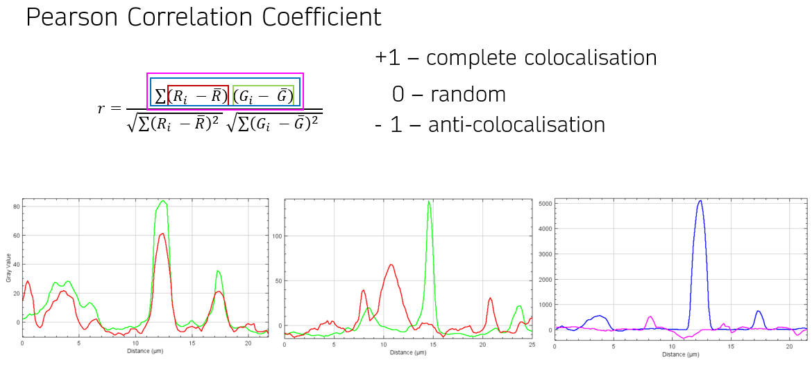
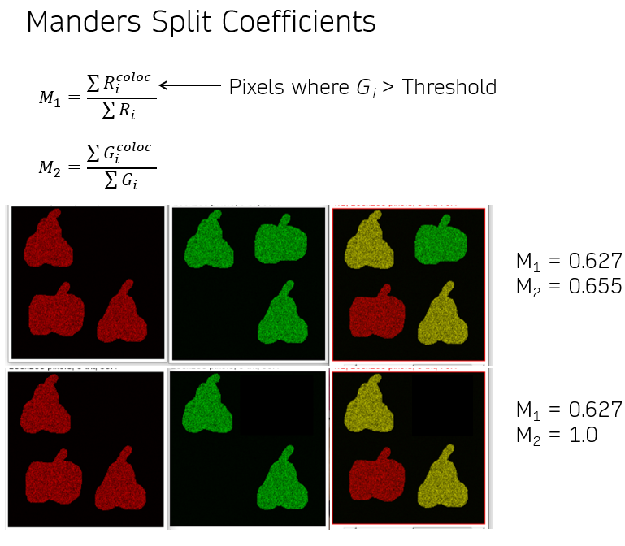
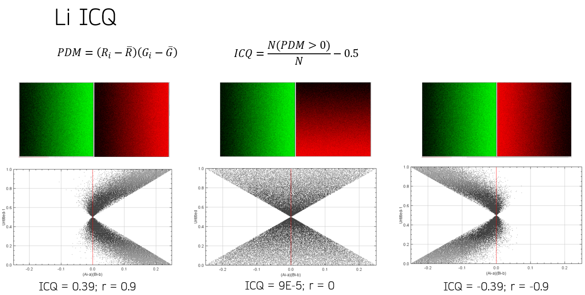

The course is meant for microscopy users who are new to Image J/FIJI
and to image processing in general, as well as for those who have
already done their first steps in FIJI and want to gain a better
orientation in the environment. We'll start from the very
basics, so you don't need to be afraid if even you've never
used FIJI before. By the time we are done you will be for example able to
write simple macros to automate tedious image processing
tasks.
Watch the whole course on
YouTube.
The course will be split into a few
Zoom sessions of 1.5
hours:
Zoom links
Date & Time: Monday,
August 30th, 2021,
3.30PM
Meeting ID: 848 4872 6268
Passcode: 7Vff8m
Recorded
session on YouTube
Date & Time: Monday,
September 6th, 2021,
3.30PM
Meeting ID: 840 9977 4400
Passcode: WRXB6Z
Recorded
session on YouTube
Date & Time: Monday,
September 20th, 2021,
3.30PM
Meeting ID: 950 7287 7698
Passcode: 568373
Recorded
session on YouTube
2D
colocalisation histogram macro with ROI selection
Date & Time: Monday,
September 27th, 2021,
3.30PM
Meeting ID: 958 4516 3589
Passcode: 583489
Recorded
session on YouTube (with additional material recorded after the live
session)
Demo macros from the 4th session with additional explanatory comments:
TestMacro_segmentation
TestMacro_SineWave
Before we start
Download FIJI (if you don't have it yet).
FIJI
Is
Just
Image
J!
Resources
Kota Miura:
Bioimage Data Analysis textbook
Old Image J
website
New Image J website
FIJI
scripting tutorial
Image.sc forum
BioImage Informatics Index
NOBIC
macros
Topics
- Why FIJI?
- open source
- modular (plugins - update sites)
- easy automation (macros)
- Digital image
- bit depth
- colour space
- image format
- pixel/voxel scaling
- metadata
- Image visualisation
- Stacks and hyperstacks
- channels (colour, contrast mode)
- slices (Z)
- frames (time)
- projections and other stack operations
- Processing - visual
- histogram scaling, LUT
- background subtraction
- sharpening
- denoising, smoothing
- deconvolution
- ...
- Image filters (Median, Gaussian blur, ...)
- Arithmetic operations on images
- Image stack registration
- Segmentation
- preprocessing (filters, edge detection)
- (automatic) thresholding (global, local)
- binary mask operations (Erode, Dilate, Open = Erode + Dilate,
Close = Dilate + Erode, Watershed)
- object counting
- ROIs and masks
- Fast Fourier Transform (FFT)
- spatial and frequency domain (spatial frequency)
- frequency domain filtering
- Object tracking (Track Mate)
- Colocalisation
- Coloc 2, JACoP
- Pearson correlation coefficient

- Manders Split coefficients

- Li ICQ

- Thresholds and significance in colocalisation (Costes)
- Image J macros
- macro recorder
- batch processing
- Image J macro language
BACK TO TOP